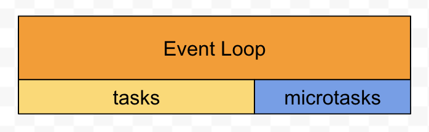
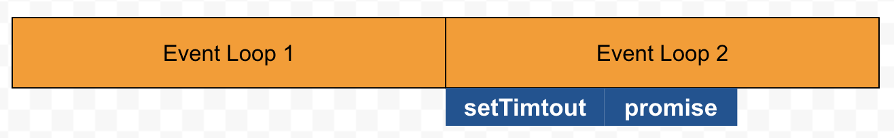
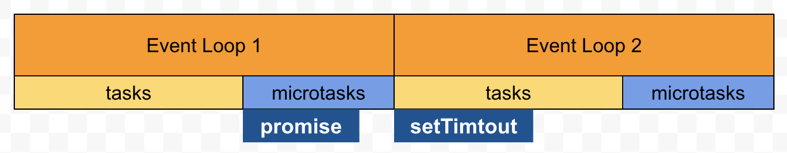
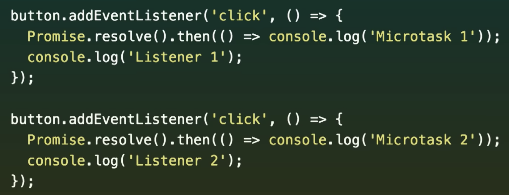
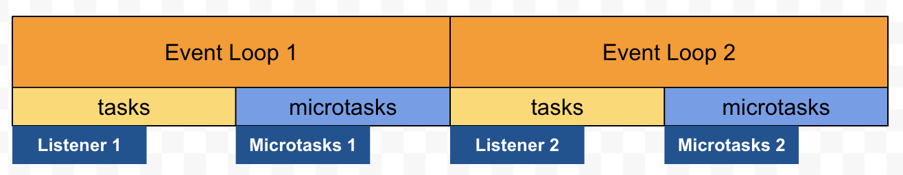
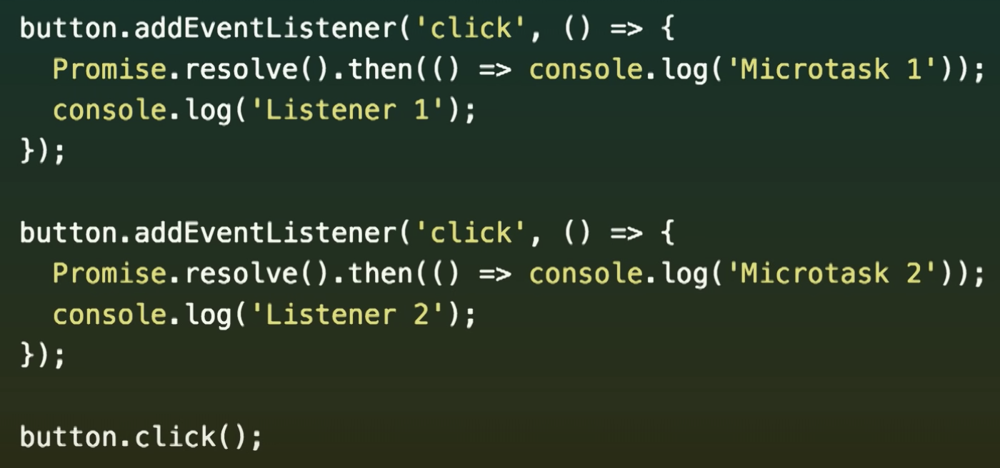
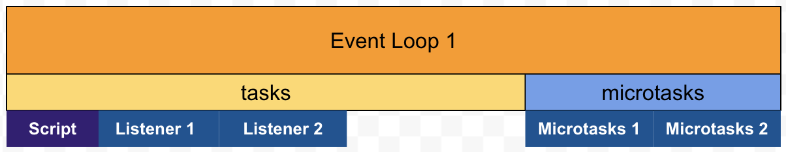

宏任务和微任务
参考资料：Jake Archibald: 在循环 - JSConf.Asia，里面关于V8 的事件循环、主线程、宏任务、微任务讲的特别详细，如果有能力建议直接看视频
1. 事件循环
一个事件循环可以简单分为两部分，宏任务(tasks)和微任务(microtasks)

它们之间有着重要的规则，下面先放出结论：
- 宏任务会优先进入任务栈并且执行，微任务放在微任务栈，只有在任务栈为空时进入。
- 当前宏任务执行完毕任务栈为空后，后续宏任务会放到下一个事件循环中执行
2. 举个 🌰
setTimeout(() => {
console.log(1);
}, 0);
Promise.resolve().then(() => {
console.log(2);
});
相信很多人都知道上面这道题的答案，问题是为什么 Promise 会比 setTimeout 快？
如果不知道宏微任务，只知道的 js 单线程，使用事件循环实现异步，很可能会以为 setTimeout 和 promise 都在 Event Loop 2 中执行，根据先后顺序，得出答案是1 2，以前我也是这么认为

事实上 promise 并不在 Event Loop 2 中，而是在 Event Loop 1 的微任务中

在视频中有一道十分有趣的题：

当我们点击按钮，会输出什么？
下面是点击按钮后的事件循环图，在第一个监听函数里，先是把Microtasks 1放入了微任务栈，以及Listener 1宏任务放入任务栈里，完成任务后栈空，继而执行Microtasks 1，第二个监听函数类似，所以会依次输出Listener 1、Microtasks 1、Listener 2、Microtasks 2

第二种情况：

我们使用 js 去触发按钮点击事件，会输出什么？
下面同样是点击按钮后的事件循环图，但不同的是触发Script后只有Listener 1和Listener 2执行完毕后Script才会执行完成，才能进行微任务的执行，所以执行的结果是Listener 1、Listener 2、Microtasks 1、Microtasks 2
